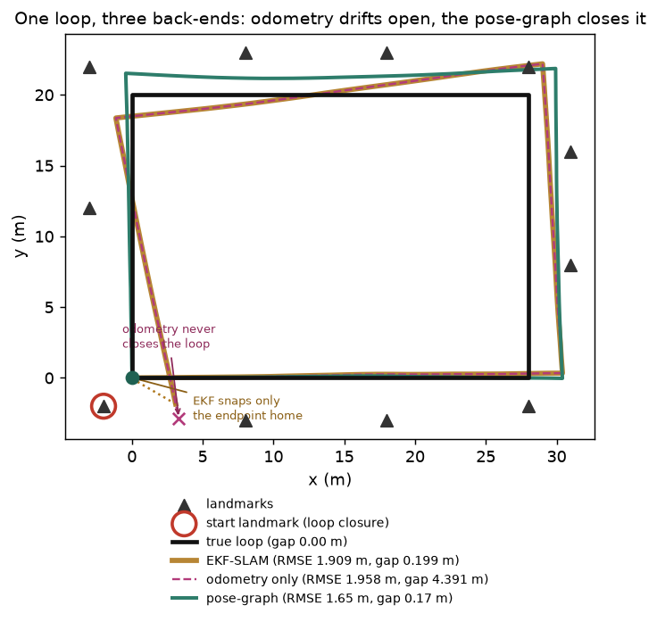

One 2-D robot drives a rectangular circuit among landmarks on biased, noisy odometry, then closes the loop by re-observing the landmark it started at. The same run is fed to three SLAM back-ends — raw dead-reckoning, an EKF filter, and a pose-graph optimizer. Each is really run; each does something different with that one loop closure.
The rule: a loop closure is only worth as much as the back-end that uses it. Odometry ignores it and finishes far from where it started; the EKF filter snaps its current pose home but the committed past stays bent (it has already marginalized history away); the pose-graph re-solves the whole trajectory at once, spreading the loop error over every pose — the lowest trajectory error and the tightest-closed loop.

| method | trajectory error (RMSE) | loop-closure gap |
|---|---|---|
| Odometry only dead-reckoning — no back-end | ✗ 1.958 m (drifts) | ✗ 4.391 m gap |
| EKF-SLAM filter back-end | ✓ 1.909 m | ✓ 0.199 m gap |
| Pose-graph / GraphSLAM optimization back-end | ✓ 1.650 m (best) | ✓ 0.170 m gap |
Integrate the wheel odometry and nothing else. With no back-end there is no way to use the loop closure — the robot never notices it is back where it started.
Biased, noisy odometry drifts steadily: 1.958 m trajectory RMSE, and it finishes 4.391 m from its true start — a wide-open loop that never closes.
Keep one online Gaussian over the robot pose: predict with the odometry each step, and when the loop closes, do a single Kalman update against the re-observed start landmark. A filter that fuses evidence as it arrives.
The loop closure slams the loop-closure gap shut — from 4.391 m down to 0.199 m. But the RMSE barely moves (1.909 m vs odometry's 1.958 m): the fix lands only on the current pose.
Build a graph of every pose, with an odometry edge between consecutive poses and one loop-closure edge tying the end back to the start, then solve the whole nonlinear least-squares with Gauss-Newton — a smoother, not a filter.
Re-optimizing all poses at once distributes the loop error over the entire lap: the lowest RMSE (1.650 m) and a tightly closed loop (0.170 m gap). It converges in ~5 Gauss-Newton iterations.
scripts/slam_zoo_experiments.py, pure NumPy) — a robot driving a 28×20 m rectangular loop on odometry that is 9% long with a per-turn heading bias, plus a single loop-closure observation of the start landmark — run through all three back-ends; the figure and every number come straight from that run. The two columns measure different things: RMSE is average distance from the true path (did you fix the whole trajectory?), while the loop-closure gap is how far the estimate finishes from its own start (did you use the loop closure at all?). The ordering holds on both: odometry worst, EKF-SLAM in between, pose-graph best.